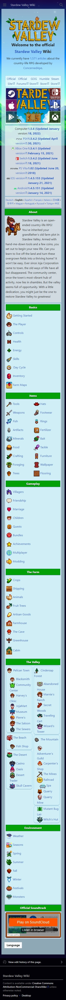
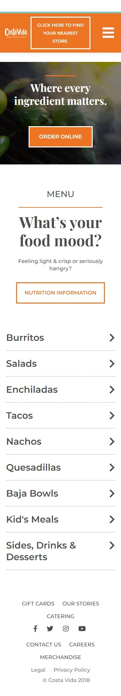

White Space and Clean Design
LUS
WebsiteThe LUS website portrays a good use of white space in their website design. The buttons and articles have a lot of padding and are specifically placed so a user can easily read and navigate the website.
PARC: Alignment
Stardew Valley Wiki
Website

The Stardew Valley Wiki website demonstrates the use of alignment in their website design. There are a lot of pages and links to them all over the page and they organize and align the most important ones to the page's focal point.
PARC: Contrast
Costa Vida
Website

Costa Vida's wesbite demonstrate the principle of contrast when concerning website design It uses a bright orange and other vibrant colors that complement each other. These colors really grab a user's attention.